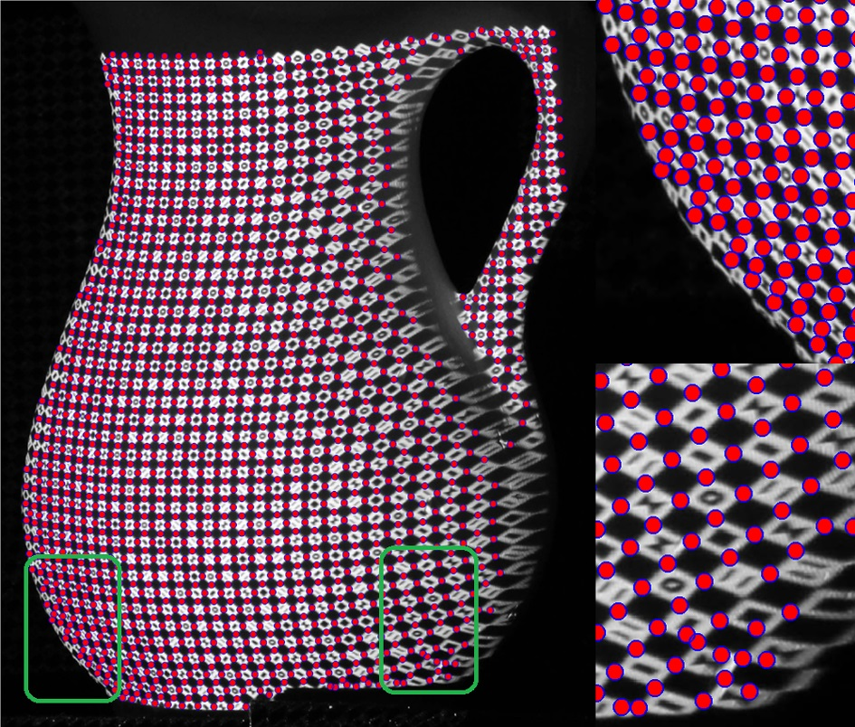

Publications
Journal Papers
| RomniStereo: Recurrent Omnidirectional Stereo Matching Hualie Jiang, Rui Xu, Minglang Tan and Wenjie Jiang IEEE Robotics and Automation Letters, 2024. pdf, bibtex, code | |
| Unsupervised Monocular Depth Perception: Focusing on Moving Objects Hualie Jiang, Laiyan Ding, Zhenglong Sun and Rui Huang IEEE Sensors Journal, 2021. pdf, bibtex, code (the Featured Article in Issue 24) | |
 | UniFuse: Unidirectional Fusion for 360° Panorama Depth Estimation Hualie Jiang, Zhe Sheng, Siyu Zhu, Zilong, Dong and Rui Huang IEEE Robotics and Automation Letters, 2021. pdf, bibtex, demo, code |
 | A High Dynamic Range Structured Light Means for the 3D Measurement of Specular Surface Zhan Song, Hualie Jiang, Haibo Lin and Suming Tang In Optics and Lasers in Engineering, 2017. pdf, bibtex |
Conference Papers
| PLNet: Plane and Line Priors for Unsupervised Indoor Depth Estimation
Hualie Jiang, Laiyan Ding, Junjie Hu and Rui Huang In IEEE International Conference on 3D Vision (3DV), 2021. pdf, bibtex, demo, code | |
| DiPE: Deeper into Photometric Errors for Unsupervised Learning of Depth and Ego-motion from Monocular Videos Hualie Jiang, Laiyan Ding, Zhenglong Sun and Rui Huang In IEEE/RSJ International Conference on Intelligent Robots and Systems (IROS), 2020. pdf, bibtex, demo, code | |
 | High Quality Monocular Depth Estimation via A Multi-Scale Network and A Detail-Preserving Objective Hualie Jiang and Rui Huang In IEEE International Conference on Image Processing (ICIP), 2019. pdf, bibtex, code |
 | Hierarchical Binary Classification for Monocular Depth Estimation Hualie Jiang and Rui Huang In IEEE International Conference on Robotics and Biomimetics (ROBIO), 2019. pdf, bibtex |
 | An Automatic 3D Textured Model Building Method Using Stripe Structured Light System Hualie Jiang, Yuping Ye, Zhan Song, Suming Tang and Yuming Dong In International Conference on Computer Vision Systems (ICVS), 2017. pdf, bibtex |
|  | A Robust Feature Detection Algorithm for the Binary Encoded Single-Shot Structured Light System Hualie Jiang and Zhan Song IEEE International Conference on Information and Automation (ICIA), 2016. pdf, bibtex (Best Paper Finalist) |